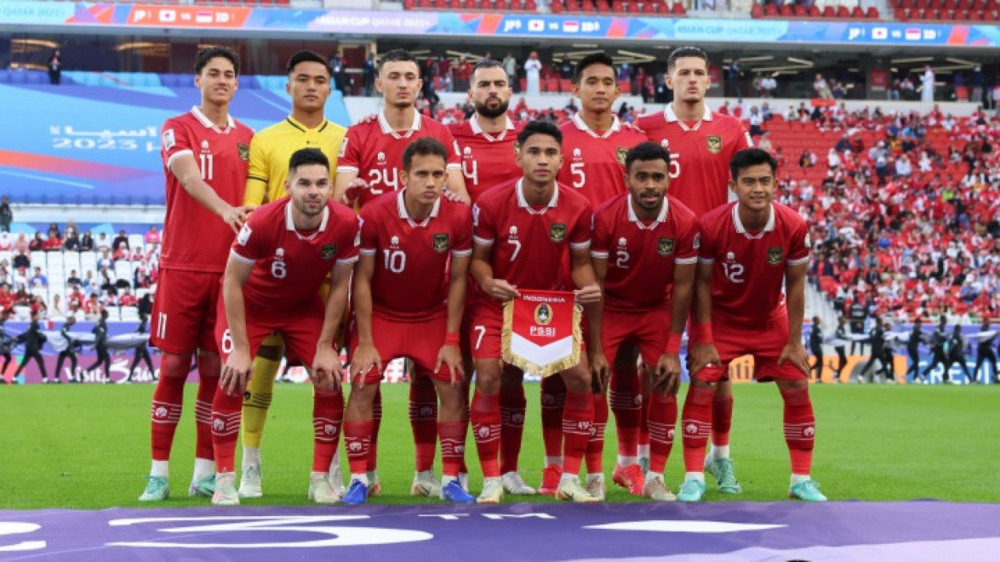
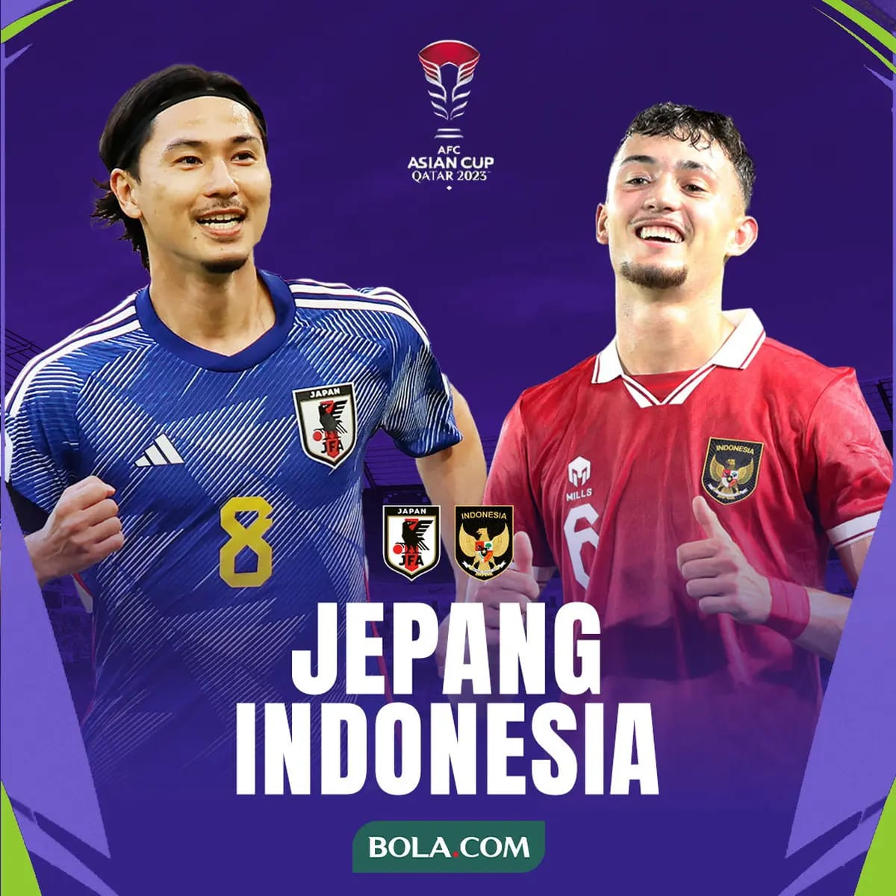
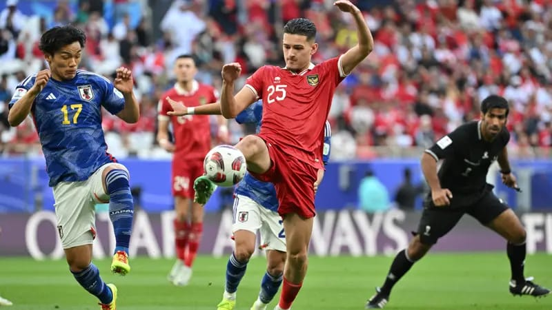
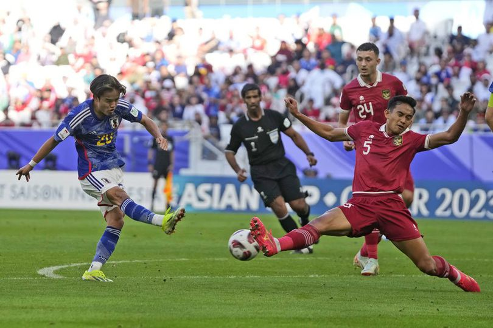

Timnas Indonesia akan menghadapi Timnas Jepang pada matchday ke-5 Round 3 Kualifikasi Piala Dunia 2026 Zona Asia. Tentu saja menghadapi negara kuat seperti Jepang,squad Garuda asuhan STY tersebut berada dalam tekanan. Pasalnya,squad Garuda belum bisa meraih kemenangan perdananya di Round 3 ini. Imbas hasil Imbang melawan Bahrain dan Kalah melawan Cina,Timnas Indonesia harus segera bangkit dari keterpurukan.
Timnas Indonesia VS Timnas Jepang akan di jadwalkan bertanding pada Jumat,15 November 2024,yang dimana pertandingan tersebut akan di selenggarakan di Stadion Utama Gelora Bung Karno,Senayan. Bermain di kandang sendiri,Timnas Indonesia harus bermain lebih percaya diri di hadapan puluhan ribu suporter Indonesia.
Pemain yang di panggil Shin Tae Yong saat menjamu Bahrain dan Cina
Goalkeeper
Marteen paes,Muhammad Riyandi,Nadeo Argawinata
Defender
Pratama Arhan,Mees Hilgers,Jay Idzes,Rizky Ridho,Sandy Walsh,Calvin Verdonk,Jordi Amat,Yance Sayuri,Yakob Sayuri,Shayne Pattynama,Muhammad Ferari,Justin Hubner
Miedfielder
Thom Haye,Ivar Jenner,Nathan Tjoe-A-On,Ricky Kambuaya
Striker
Ragnar Oeratmangoen,Witan Sulaeman,Rafael Struick,Ramadhan Sananta,Hokky Caraka,Egy Maulana Vikri,Eliano Reijnders,Marselino FerdinandTimnas Indonesia mendapatkan Amunisi terbaru dimana pemain keturunan yang bermain di Klub Raksasa Denmark Copenhagn yaitu Kevin Diks,telah selesai menjalani proses sumpah WNI. Dengan demikian,PSSI sedang berusaha untuk mengebut proses administrasi Pemain tersebut agar segera bisa melakukan debutnya.
Pertemuan terakhir Timnas Indonesia melawan Timnas Jepang terjadi pada laga ke-3 Grup D Piala Asia Qatar 2023. Kala itu Timnas Indonesia harus mengakui keunggulan Timnas Jepang dengan skor 3-1. Gol Timnas Jepang di cetak oleh Ayashe Ueda pada menit 6(P) dan menit 52,serta gol bunuh diri dari Justin Hubner. Gol Timnas Indonesia di cetak oleh Sandy Walsh pada menit 90+1,dengan memanfaatkan lemparan ke dalam Arhan.

Gambar 1.2 : Line-Up Timnas Indonesia kontra Timnas Jepang Pada Piala Asia
Sejak tahun 1954, Timnas Indonesia di level senior tercatat sudah 16 bertemu di pentas internasional. Dari 16 pertemuan tersebut, rekornya sebagai berikut:
- • Indonesia menang dalam lima pertandingan
- • Laga berakhir imbang dua kali
- • Sebanyak sembilan kali Indonesia mengalami kekalahan

Gambar 1.1 : Piala Asia 2023
Beberapa kekalahan terbesar yang diderita Timnas Indonesia dari Jepang, di antaranya kalah di ajang Merdeka Tournament pada 10 Agustus 1976. Ketika itu Tim Merah-Putih kalah 0-6. Indonesia juga pernah kalah 0-4, yakni ketika tampil di Japan Cup 31 Mei 1979.
Kekalahan terbesar Indonesia dari Jepang terakhir terjadi pada 11 Juni 1989, yakni di ajang kualifikasi Piala Dunia 1990. Menjalani partai away di Tokyo, Timnas Indonesia takluk 0-5. Padahal, beberapa pekan sebelumnya, Indonesia mampu menahan Jepang 0-0 di Jakarta.

Gambar 1.3 : Justin Hubner berhadapan dengan Reo Hayate
Pernah kalah telak dari Jepang, Timnas Indonesia juga pernah menang besar dari Jepang. Dengan begitu, Tim Garuda tak perlu jeri saat kembali bersua nanti. Kemenangan telak atas Jepang itu ditorehkan dalam Merdeka Tournament, tepatnya pada 11 Agustus 1968. Pada turnamen persahabatan internasional yang diadakan di Kuala Lumpur untuk memperingati Hari Kemerdekaan Malaysia itu, Indonesia menang 7-0.
Lalu pada laga persahabatan yang dimainkan di Stadion GBK, Jakarta, 24 Februari 1981, Indonesia menang dengan skor 2-0. Sayangnya, itu adalah kemenangan terakhir yang dibukukan Indonesia atas Jepang,
Sementara dalam pertemuan terakhir kedua tim, Indonesia takluk 1-3. Anda mungkin masih ingat jelas karena perjumpaan terakhir Indonesia versus Jepang itu terjadi awal tahun ini, tepatnya pada 24 Januari 2024 di ajang Piala Asia 2023.

Gambar 1.4 : Rizky Ridh menghalau tendangan Taefusa Kubo
Meski begitu, peluang Indonesia untuk membuat kejutan dengan mengalahkan Jepang yang saat ini dianggap lebih kuat, tentu tetap terbuka. Pasalnya, apa pun bisa terjadi dalam sebuah pertandingan sepak bola.